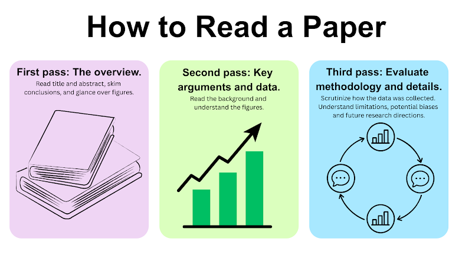

<!doctype html>
<html lang="en">
<head>
<meta charset="UTF-8">
<meta name="viewport" content="width=device-width, initial-scale=1.0">
<title>Module 3: Biodesign and Literature Review — SynBase</title>
<link rel="stylesheet" href="../css/style.css?v=78">
</head>
<body>

<header class="site-header" id="site-header"></header>
<section class="module-hero" id="module-hero"></section>

<div class="container narrow">
  <div class="page-nav-mount" id="page-nav-mount"></div>
</div>
<main class="container narrow" id="page-viewport"></main>
<div class="container narrow">
  <div class="page-footer-nav" id="page-footer-nav"></div>
</div>

<script src="../js/modules-meta.js?v=16"></script>
<script src="../js/progress.js?v=27"></script>
<script src="../js/quiz-engine.js?v=32"></script>
<script>
const MODULE = {
  id: "module3",
  number: 3,
  title: "Biodesign and Literature Review",
  lede: "Once you've got the basics of bioengineering and synthetic biology down, the next question is how to actually find a problem worth solving — and how to find, read, and trust the research that helps you solve it.",
  pages: [
    {
      id: "3.1r", type: "read", title: "Welcome to Biodesign and Literature Review",
      html: `
        <p>So far in this course, you've explored the differences between bioengineering and fundamental synthetic biology concepts. But how do you actually start using them in the real world — and learn from what others in the field are already doing?</p>
        <p>In this module, you'll learn the biodesign and literature review processes: how to combine existing knowledge, gaps in that knowledge, and your own genuine interest in a topic to start designing a solution to a real need.</p>
        <p>Let's start with a fun question.</p>
      `
    },
    {
      id: "3.2f", type: "freeresponse", title: "If You Could Solve Any Problem", part: "Part 1: The Biodesign Framework",
      freeResponse: { prompt: "If you could solve any problem in the world, and you had unlimited resources and ability to do so, what would it be, and why? (2–3 sentences)" }
    },
    {
      id: "3.3r", type: "read", title: "Four Ways to Narrow Down a Need", part: "Part 1: The Biodesign Framework",
      html: `
        <p>That was a hard question, wasn't it? There are countless answers, and none of them is more "correct" than any other. When the possibilities are boundless, it's hard to know where to start. We'll lean on the Stanford Biodesign process to guide some critical thinking and creative brainstorming.</p>
        <p>So — what do you do when there are so many potential needs that you don't know where to begin? There are four major ways to start narrowing them down:</p>
        <ul>
          <li><strong>Previous knowledge or interest</strong> — start from something you already know deeply: a personal experience, a hobby, a field you've studied.</li>
          <li><strong>Clinical observation</strong> — spend time in a real clinical or field setting and notice unmet needs firsthand.</li>
          <li><strong>Patient or care-provider interviews</strong> — talk directly to the people experiencing or treating the problem, to validate what you've observed.</li>
          <li><strong>Surveys</strong> — collect data from a broader group to see how widespread or urgent the need really is.</li>
        </ul>
      `
    },
    {
      id: "3.4r", type: "read", title: "Case Study: Osmind and Mental Health", part: "Part 1: The Biodesign Framework",
      html: `
        <p>Let's look at a case study of what this looks like in practice.</p>
        <p><strong>Reading #1:</strong> <a href="https://med.stanford.edu/biodesign/our-impact/stories/osmind-building-a-platform-for-breakthrough-mental-health.html" target="_blank" rel="noopener">Osmind & Mental Health with Biodesign</a> — read the article, then continue to the next few pages.</p>
      `
    },
    {
      id: "3.5f", type: "freeresponse", title: "Questions About Searching for a Need", part: "Part 1: The Biodesign Framework",
      freeResponse: { prompt: "As you read through the Osmind article, what questions arose about how you might search for a need in the synthetic biology space? Write down 1–2 questions you have." }
    },
    {
      id: "3.6p", type: "practice", title: "Needs-Driven vs. Technology-Driven", part: "Part 1: The Biodesign Framework",
      question: {
        prompt: "How would you describe the way Osmind's founders, Lucia Huang and Jimmy Qian, arrived at their biological need?",
        options: [
          { text: "Technology-driven — they started with a tool and looked for a use for it", correct: false },
          { text: "Needs-driven — they spent time talking to people on the front lines of mental health before devising a solution", correct: true },
          { text: "Neither — the idea came from a business plan competition", correct: false },
          { text: "It's impossible to tell from the reading", correct: false }
        ],
        explanation: "Huang took Stanford's Biodesign Innovation course, where she learned a process for need-driven innovation. She and Qian committed to talking with people on the front lines of mental health care to deeply understand the problem before building anything — the defining move of needs-driven (as opposed to technology-driven) design."
      }
    },
    {
      id: "3.7f", type: "freeresponse", title: "Precautions When Surveying a Population", part: "Part 1: The Biodesign Framework",
      freeResponse: { prompt: "Just like Huang and Qian did for mental health, imagine you're planning to interview or survey a specific group of people — say, patients with a certain condition, a particular age group, or a specific community — to identify a real need they have.<br><br>What are 1–2 precautions or risks you'd want to keep in mind before conducting a survey or interview like this? Think about things like how you phrase your questions (avoiding leading language), who might be left out of your sample, privacy and consent, or how sensitive the topic might be for that population." }
    },
    {
      id: "3.8r", type: "read", title: "Anatomy of a Need Statement", part: "Part 1: The Biodesign Framework",
      html: `
        <p>So what happens once you've identified a potential need? Say you've landed on one biological need — maybe you've realized that no bakery within a few blocks offers vegan options, and you want to fill that gap. Turning that idea into something complete takes three components:</p>
        <ul>
          <li><strong>A problem</strong> — What is the exact issue you're trying to solve? Is there a way to quantify it? What's the current state of the art for solving it?</li>
          <li><strong>A population</strong> — What particular group or groups is your solution targeted toward? Why this population, and how will your solution reach them?</li>
          <li><strong>An outcome</strong> — What's the largest goal of solving this problem? Is there a way to quantify what an ideal outcome would look like?</li>
        </ul>
      `
    },
    {
      id: "3.9m", type: "matching", title: "Match the Need Statement Parts", part: "Part 1: The Biodesign Framework",
      matching: {
        instructions: "A team is designing a solution for people affected by muscular dystrophy. Match each part of their need statement to the example that fits it.",
        pairs: [
          { left: "Problem", right: "A way to mobilize leg movement" },
          { left: "Population", right: "Caregivers and patients battling muscular dystrophy" },
          { left: "Outcome", right: "Make walking around easier for patients and caregivers impacted by muscular dystrophy" }
        ]
      }
    },
    {
      id: "3.10r", type: "read", title: "The Model T: A Reverse-Engineering Exercise", part: "Part 1: The Biodesign Framework",
      html: `
        <p>Nice work getting familiar with need statements — that structure will help keep your project organized as it develops. Now let's practice building one from scratch, in reverse.</p>
        <p>Imagine it's the 1920s and you're Henry Ford. You're looking at the world around you and notice a significant need for something like the Model T — the first car as we'd recognize it today. Let's try to reverse-engineer the need statement behind it: how might that thought process have started?</p>
      `
    },
    {
      id: "3.11f", type: "freeresponse", title: "Reverse-Engineer the Model T's Need Statement", part: "Part 1: The Biodesign Framework",
      freeResponse: { prompt: "Using the problem / population / outcome structure from the previous page, imagine yourself in the early 1900s, in Ford's position. What need might he have been trying to solve? Write a need statement for the Model T as if you were designing it for the first time." }
    },
    {
      id: "3.12f", type: "freeresponse", title: "Your Own Passion", part: "Part 1: The Biodesign Framework",
      freeResponse: { prompt: "Time to connect this to your own passion: what is one population you'd be interested in designing a solution for, and why?" }
    },
    {
      id: "3.13f", type: "freeresponse", title: "One-Minute Idea Brainstorm", part: "Part 1: The Biodesign Framework",
      freeResponse: { prompt: "Time for a creative brainstorming session — let your mind wander.<br><br>Set a timer for one minute. Write down every potential project idea or need you can think of. It can sound completely impossible — no idea is too big or too small." }
    },
    {
      id: "3.14r", type: "read", title: "Turning Your Ideas Into a Research Direction", part: "Part 2: From Ideas to a Research Direction",
      html: `
        <p>Give yourself a pat on the back — that brainstorm isn't an easy exercise! Now it's time to take a few of those ideas and start developing them the way a researcher would: by asking sharper questions about what's already known, who's affected, and what a first step might look like.</p>
      `
    },
    {
      id: "3.15f", type: "freeresponse", title: "Idea Development", part: "Part 2: From Ideas to a Research Direction",
      freeResponse: { prompt: "Pick one (or more) of the ideas from your brainstorm on the previous page. Write out your own answers to each of these questions — the way you'd ask a mentor or expert in the field:<br>1. What are the current solutions to this problem?<br>2. Who is a clear population affected by this problem?<br>3. What would be a good first model or proof-of-concept to test this idea?<br>4. Who, or which organizations, could you reach out to in order to learn more about this problem space?<br><br>A few sentences per question is enough — this worksheet is meant to get your thinking down on paper before you go looking for literature." }
    },
    {
      id: "3.16r", type: "read", title: "Narrowing to Your Top 3: Evaluation Criteria", part: "Part 2: From Ideas to a Research Direction",
      html: `
        <p>Now that you've done some preliminary exploring, it's time to narrow your ideas down. The Stanford Biodesign process weighs a potential project against five criteria: Efficacy, Cost, Safety, Usability, and Access. Weighing your ideas against these is what separates an idea you're excited about from an idea that's actually feasible to pursue.</p>
      `
    },
    {
      id: "3.17m", type: "matching", title: "Match Each Criterion to Its Definition", part: "Part 2: From Ideas to a Research Direction",
      matching: {
        instructions: "Match the term to its definition.",
        pairs: [
          { left: "Efficacy", right: "Will the idea have a measurable outcome, and how many people could it reach?" },
          { left: "Cost", right: "Beyond money, what environmental or social cost does the idea carry?" },
          { left: "Safety", right: "Could the idea cause harm to the community or the research team, and how would you minimize that?" },
          { left: "Usability", right: "Can the people involved actually use the solution without major barriers?" },
          { left: "Access", right: "Which communities can realistically access this solution, and are there disparities?" }
        ]
      }
    },
    {
      id: "3.18f", type: "freeresponse", title: "Score Your Top Idea Against the Criteria", part: "Part 2: From Ideas to a Research Direction",
      freeResponse: { prompt: "Take your strongest idea from the Idea Development worksheet you completed earlier. In a few sentences per criterion, evaluate it against Efficacy, Cost, Safety, Usability, and Access — where does it hold up, and where are the gaps? Use this reflection, together with your worksheet answers, to help narrow your full list down to a top 3." }
    },
    {
      id: "3.19r", type: "read", title: "From Idea to Evidence", part: "Part 3: Finding the Literature",
      html: `
        <p>Once you have a need statement and a direction you're excited about, congratulations — that's a genuinely difficult part of the biodesign process! This is where the project starts to get exciting, and where much of the research process begins.</p>
        <p>There are many ways to search for the data or answers you need. In this part, we'll focus on searching scientific literature — work that's already been published, and that can tell you what's known, what's been tried, and what's still a gap.</p>
      `
    },
    {
      id: "3.20r", type: "read", title: "Reading a Paper Like a Story, Part 1: Abstract, Introduction, Methods", part: "Part 3: Finding the Literature",
      html: `
        <p>Imagine typing a research question into Google Scholar for a school assignment and getting almost a million results. How do you figure out which paper is actually useful? Start by noticing that every effective paper tells a story, with recognizable parts:</p>
        <p><strong>Abstract</strong> — the authors outline their main goal and the gap in existing research they're addressing, posing a clear question and briefly summarizing what they learned. Think of it as a movie trailer: a peek at what to expect, answering "who, what, when, where, why."</p>
        <p><strong>Introduction & Background</strong> — the true start of the story. The authors lay out the key information needed to understand the project: the gap in the literature, a short overview of the existing state of the art, and a clear objective. Think of this as the exposition, where the key characters are introduced and the foundation is laid.</p>
        <p><strong>Methods</strong> — documents exactly what the researchers did, so others can replicate and build on it. Think of this as the plot. Research isn't clean and linear — there's learning and adjustment along the way, and a good methods section documents that honestly, even when something didn't work the first time.</p>
      `
    },
    {
      id: "3.21r", type: "read", title: "Reading a Paper Like a Story, Part 2: Results, Discussion, Conclusion", part: "Part 3: Finding the Literature",
      html: `
        <p><strong>Results</strong> — every memorable story has a climax, and in a research paper, this is it: the section where findings are revealed. Researchers often use figures to communicate results quickly. You'll frequently see references to a supplemental section, where results are elaborated on beyond the scope of the main paper.</p>
        <p><strong>Discussion</strong> — the plot begins to resolve, and researchers communicate their main takeaways. This might include limitations (data availability, assumptions made) and what questions remain.</p>
        <p><strong>Conclusion</strong> — wraps up the story, reviewing what was learned and what can still be built upon. It can leave you with questions — but ones that provide a foundation for future research, not loose ends.</p>
        <p>When you come across a paper of interest, read the abstract and skim the methods or discussion as a preliminary pass: does it sound like it can answer your question? If so, read it in depth — and follow the trail it leaves.</p>
      `
    },
    {
      id: "3.22m", type: "matching", title: "Match the Paper Section to Its Story Role", part: "Part 3: Finding the Literature",
      matching: {
        instructions: "Match the term to its definition.",
        pairs: [
          { left: "Abstract", right: "The trailer: previews the paper's who, what, when, where, and why" },
          { left: "Introduction", right: "The exposition: introduces the gap in knowledge and lays the foundation" },
          { left: "Methods", right: "The plot: documents exactly what the researchers did, so others can replicate it" },
          { left: "Results", right: "The climax: reveals what the researchers found" },
          { left: "Discussion", right: "The resolution: interprets the findings and names the limitations" },
          { left: "Conclusion", right: "The wrap-up: reviews what was learned and what's left to explore" }
        ]
      }
    },
    {
      id: "3.23r", type: "read", title: "Two Ways to Find More Papers", part: "Part 3: Finding the Literature",
      html: `
        <p><strong>Follow citation chains.</strong> Every paper has a references or citations section — look at the papers it cites, and, when you can, the papers that cite it back. Following that chain, in both directions, is often the best way to understand how the literature on a question was built, and what's currently established in the field.</p>
        <p><strong>Use AI research tools.</strong> Several free AI tools can point you toward helpful literature. Scite, for example, is trained only on scientific articles, so its answers come from a reviewed, reliable source — and it provides a link and citation for every piece of information it pulls, so you can check the literature yourself. You can also restrict other AI tools, like Claude, to pull only from a specific scientific journal, so you know there's a citation somewhere backing up what it tells you.</p>
      `
    },
    {
      id: "3.24f", type: "freeresponse", title: "Responsible AI Use: Scenario 1 — The Missing Data", part: "Part 3: Finding the Literature",
      freeResponse: { prompt: "The use of AI in research is still a budding question — there are so many tools available, and it's not always obvious how to use them responsibly. Read the scenario below and reflect.<br><br><strong>Scenario:</strong> You run into a classic research problem — you don't have the exact data you're looking for. There are some proxies and other relevant information, but the numbers you need are nowhere to be found. Your research poster is due soon, so you ask an AI tool to give you some numbers for the values you need. You don't know where they came from.<br><br>Part 1: Is this an example of responsible AI use? Yes / No / It depends.<br>Part 2: What makes it either responsible or not?" }
    },
    {
      id: "3.25f", type: "freeresponse", title: "Responsible AI Use: Scenario 2 — AI-Assisted Plotting Code", part: "Part 3: Finding the Literature",
      freeResponse: { prompt: "<strong>Scenario:</strong> You have a specific question about your data and a specific plot in mind. You open a coding notebook and type a prompt describing the plot you want. The AI isn't perfect, but it produces most of the code, and you double-check everything yourself. After a quick pass-through, it produces exactly the plot you were looking for.<br><br>Part 1: Is this an example of responsible AI use? Yes / No / It depends.<br>Part 2: What makes it either responsible or not?" }
    },
    {
      id: "3.26f", type: "freeresponse", title: "Responsible AI Use: Scenario 3 — Summarizing a Paper with NotebookLM", part: "Part 3: Finding the Literature",
      freeResponse: { prompt: "<strong>Scenario:</strong> You come across a paper that looks very relevant to your research question. You get the main idea, but there are some complicated processes you have questions about. You upload the paper to NotebookLM (an AI research assistant) as a source and ask it to explain the parts you don't understand.<br><br>Part 1: Is this an example of responsible AI use? Yes / No / It depends.<br>Part 2: What makes it either responsible or not?" }
    },
    {
      id: "3.27r", type: "read", title: "Criterion 1: When Was the Paper Written?", part: "Part 4: Evaluating the Literature",
      html: `
        <p>Say you've narrowed down some useful papers and are taking a closer look — that's a big step forward! Now, how do you know whether a paper is a reliable source you can trust and cite? Here's the first of a few criteria to use.</p>
        <p>Research is time-dependent. There are two broad types of sources you'll find:</p>
        <p><strong>Evergreen</strong> — the piece will remain important and significant across time, and can be built on for years to come. A paper introducing a foundational biological mechanism, like DNA transcription, is evergreen.</p>
        <p><strong>Time-sensitive</strong> — produced in light of something happening in the here and now. Research released about COVID-19 during the pandemic was highly time-sensitive, since it addressed an event having a huge impact on the world in that moment.</p>
        <p>Both types are useful. You'll want the most up-to-date information available for your specific topic, but for foundational knowledge, earlier evergreen research can be just as valuable. Make sure you understand which research is building on what.</p>
      `
    },
    {
      id: "3.28p", type: "practice", title: "Evergreen vs. Time-Sensitive", part: "Part 4: Evaluating the Literature",
      question: {
        prompt: "A 2020 paper reporting the first characterized cases of a novel respiratory virus outbreak is best described as:",
        options: [
          { text: "Evergreen", correct: false },
          { text: "Time-sensitive", correct: true },
          { text: "Neither — it isn't real research", correct: false },
          { text: "Both equally", correct: false }
        ],
        explanation: "A paper documenting something happening in the here and now — like the early days of a novel outbreak — is time-sensitive, the same way COVID-19 research released during the pandemic was. A paper on a foundational mechanism like DNA transcription, by contrast, would be evergreen."
      }
    },
    {
      id: "3.29s", type: "shortanswer", title: "Name That Source Type", part: "Part 4: Evaluating the Literature",
      shortAnswer: {
        prompt: "What's the term for a source that stays relevant and valuable over time, regardless of when it was published — like a paper introducing a foundational mechanism such as DNA transcription?",
        acceptedAnswers: ["evergreen", "evergreen source"],
        explanation: "A source is \"evergreen\" when it remains important and can be built on for years, independent of publication date — as opposed to a time-sensitive source, which is produced in light of something happening in the here and now."
      }
    },
    {
      id: "3.30r", type: "read", title: "Criterion 2: Where Is It Published?", part: "Part 4: Evaluating the Literature",
      html: `
        <p>For school assignments and research work in general, look for literature published in a peer-reviewed journal. Peer review means other researchers in the field — or in related fields — carefully reviewed the paper before it was accepted for publication, which makes it much less likely that inaccurate or fabricated information gets released to the public. To check whether a journal is peer-reviewed, visit its "About" page — if it is, the page will say so.</p>
        <p>Some well-known, peer-reviewed journals for synthetic biology include Nature, CELL, ACS Synthetic Biology, and Frontiers in Synthetic Biology. You'll also come across papers published through Elsevier — Elsevier isn't itself a single journal, but a publisher of many peer-reviewed journals, so check the specific journal's own review policy rather than assuming from the publisher alone.</p>
      `
    },
    {
      id: "3.31p", type: "practice", title: "Peer-Reviewed Journals", part: "Part 4: Evaluating the Literature",
      question: {
        prompt: "Which of the following are peer-reviewed synthetic biology journals? Select all that apply.",
        multi: true,
        options: [
          { text: "Nature", correct: true },
          { text: "ACS Synthetic Biology", correct: true },
          { text: "Frontiers in Synthetic Biology", correct: true },
          { text: "A personal blog post", correct: false }
        ],
        explanation: "Nature, ACS Synthetic Biology, and Frontiers in Synthetic Biology are all peer-reviewed journals that regularly publish synthetic biology research. A personal blog post has no peer-review process — always check a journal's \"About\" page to confirm before citing it."
      }
    },
    {
      id: "3.32r", type: "read", title: "Criterion 3: Why Are You Reading It — and How to Take Notes", part: "Part 4: Evaluating the Literature",
      html: `
        <p>Last but not least, consider why you're reading a given paper — every piece of literature serves a different purpose, and you might want a set that touches on several of these:</p>
        <ul>
          <li>Learning what's important in a new field</li>
          <li>Learning about a new way a technique is being applied</li>
          <li>The title made you curious</li>
        </ul>
        
        <p>However you read, one practical strategy is to do it in passes rather than start to finish: a first quick pass just for the overview (title, abstract, conclusions, figures), a second pass for the key arguments and data, and — only for papers that matter enough to your project — a third, closer pass evaluating the methodology itself. Most papers only need the first pass.</p>
        <p>As you read, a few habits go a long way:</p>
        <ul>
          <li>Summarize in your own words, to keep focus and retain information.</li>
          <li>Note your reason for reading, plus your ideas and impressions, as you go.</li>
          <li>Write down questions as they come up.</li>
          <li>Avoid copying down long quotes or dense details verbatim.</li>
          <li>Note-taking by hand tends to work better, even if it's less convenient.</li>
        </ul>
      `
    },
    {
      id: "3.33r", type: "read", title: "Useful Resources", part: "Part 4: Evaluating the Literature",
      html: `
        <p>A short list of tools you'll come back to as you keep researching:</p>
        <ul>
          <li><strong>For search:</strong> Google Scholar</li>
          <li><strong>For citations:</strong> Zotero, EBSCO Host</li>
          <li><strong>For notes:</strong> Notion, NotebookLM</li>
          <li><strong>For writing:</strong> Overleaf (LaTeX)</li>
        </ul>
      `
    },
    {
      id: "3.34o", type: "ordering", title: "The Biodesign Process, Start to Finish", part: "Part 4: Evaluating the Literature",
      ordering: {
        prompt: "Arrange the stages of the biodesign process you walked through in this module, in the order you'd actually carry them out.",
        items: [
          "Identify a potential need",
          "Validate the need through interviews, surveys, or observation",
          "Build a need statement (problem, population, outcome)",
          "Evaluate your idea against the criteria (efficacy, cost, safety, usability, access)",
          "Research the existing literature",
          "Formulate a research question"
        ],
        explanation: "This is the arc the module walked through: you start by noticing a possible need and confirming it's real (Part 1), turn it into a formal need statement and weigh your ideas against the five evaluation criteria (Part 2), then turn to the literature to see what's already known (Part 3), and finally use everything you've learned to write a specific, answerable research question (Part 4) — which is exactly what's next."
      }
    },
    {
      id: "3.35f", type: "freeresponse", title: "Formulate Your Research Question", part: "Part 4: Evaluating the Literature",
      freeResponse: { prompt: "You've built a need statement, developed an idea, and learned how to search and evaluate the literature around it. Now put it together: write a first-draft research question for your project.<br><br>A strong research question is specific, feasible to investigate, and points to an outcome you could actually measure. Ground it in what you found (or expect to find) in the literature — what gap is your question trying to fill?<br><br>Once you have that question, the modules ahead — genetic circuits, plasmid design, and experimental workflows — are where you'll learn the technical skills to actually go build a solution to the need you identified here." }
    }
  ]
};

(async () => {
  const user = await bootstrapAuthAndProgress(false);
  if (!user) return;
  renderModulePage(MODULE);
})();
</script>
</body>
</html>
